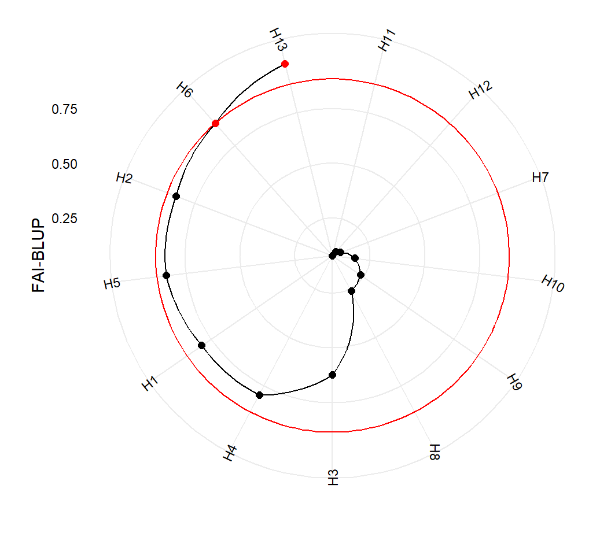

Getting started
In this section we will use the data examples data_ge and data_ge2 provided in the metan package. For more information, please, see ?data_ge and ?data_ge2. Other data sets can be used provided that the following columns are in the dataset: environment, genotype, block/replicate and response variable(s).
FAI-BLUP index
The FAI-BLUP is a multi-trait index based on factor analysis and ideotype-design recentely proposed by Rocha, Machado, and Carneiro (2018). It is based on factor analysis, when the factorial scores of each ideotype are designed according to the desirable and undesirable factors. Then, a spatial probability is estimated based on genotype-ideotype distance, enabling genotype ranking (Rocha, Machado, and Carneiro 2018). The BLUPs from genotypes are obtained with the function WAASB() and then the function FAI_BLUP() is used to compute the FAI-BLUP index.
library(metan)
library(magrittr) # used for the forward-pipe operator %>%
FAI = data_ge2 %>%
WAASB(ENV, GEN, REP, c(KW, NKE, PH, EH)) %>%
FAI_BLUP(DI = c("max", "max", "max", "min"),
UI = c("min", "min", "min", "max"),
SI = 15)## Warning in checkConv(attr(opt, "derivs"), opt$par, ctrl =
## control$checkConv, : Model failed to converge with max|grad| = 0.00577455
## (tol = 0.002, component 1)## Evaluating variable KW 25 %
## Evaluating variable NKE 50 %
## Evaluating variable PH 75 %
## Evaluating variable EH 100 %
## Done!
##
## -----------------------------------------------------------------------------------
## Principal Component Analysis
## -----------------------------------------------------------------------------------
## eigen.values cumulative.var
## PC1 3.14414174 78.60354
## PC2 0.66041176 95.11384
## PC3 0.13857767 98.57828
## PC4 0.05686883 100.00000
##
## -----------------------------------------------------------------------------------
## Factor Analysis
## -----------------------------------------------------------------------------------
## FA1 comunalits
## KW -0.9474560 0.8976729
## NKE -0.7429934 0.5520392
## PH -0.9429971 0.8892436
## EH -0.8973216 0.8051861
##
## -----------------------------------------------------------------------------------
## Comunalit Mean: 0.7860354
##
## -----------------------------------------------------------------------------------
## Multitrait stability index
## -----------------------------------------------------------------------------------
## H13 H6 H2 H5 H1 H4 H3 H8 H9 H10
## 0.9807 0.8843 0.8413 0.8409 0.8023 0.7972 0.6222 0.2623 0.2354 0.1810
## H7 H12 H11
## 0.1163 0.1014 0.0780
##
## -----------------------------------------------------------------------------------
## Selection differential
## -----------------------------------------------------------------------------------
## Factor Selection differential (%)
## KW 1 1.297090e+00
## NKE 1 5.510697e-08
## PH 1 9.006835e-02
## EH 1 2.407567e-08
##
## -----------------------------------------------------------------------------------
## Selected genotypes
## H13 H6
## -----------------------------------------------------------------------------------
Multi-trait stability index
Based on stability only
In the following example, the selection of stable genotypes will consider the
## Warning in checkConv(attr(opt, "derivs"), opt$par, ctrl =
## control$checkConv, : Model failed to converge with max|grad| = 0.00577455
## (tol = 0.002, component 1)## Evaluating variable KW 20 %## boundary (singular) fit: see ?isSingular## Evaluating variable NKE 40 %
## Evaluating variable PH 60 %
## Evaluating variable EH 80 %
## Evaluating variable TKW 100 %
## Done!
##
## -------------------------------------------------------------------------------
## Principal Component Analysis
## -------------------------------------------------------------------------------
## Eigenvalues Variance (%) Cum. variance (%)
## PC1 2.2070167 44.140333 44.14033
## PC2 1.6186853 32.373707 76.51404
## PC3 0.8803207 17.606414 94.12045
## PC4 0.2514611 5.029222 99.14968
## PC5 0.0425162 0.850324 100.00000
##
## -------------------------------------------------------------------------------
## Factor Analysis - factorial loadings after rotation-
## -------------------------------------------------------------------------------
## FA1 FA2 Communality Uniquenesses
## KW -0.1468686 0.9185291 0.8652662 0.13473384
## NKE 0.1741379 0.7365237 0.5727911 0.42720887
## PH -0.9602598 0.0205209 0.9225199 0.07748007
## EH -0.9174029 -0.2184732 0.8893586 0.11064136
## TKW -0.6112322 0.4496236 0.5757661 0.42423385
##
## -------------------------------------------------------------------------------
## Comunalit Mean: 0.7651404
##
## -------------------------------------------------------------------------------
## Multitrait stability index
## -------------------------------------------------------------------------------
## H11 H5 H7 H10 H4 H13 H12 H6 H1 H3
## 0.9548 1.1634 2.0294 2.1097 2.1989 2.3558 2.7298 2.9740 3.0933 3.2558
## H2 H9 H8
## 3.6918 3.8566 4.0825
##
## -------------------------------------------------------------------------------
## Selection differential for WAASB index
## -------------------------------------------------------------------------------
## Factor Xo Xs SD SDperc
## PH FA1 0.2649383 0.1905618 -0.07437652 -28.07315
## EH FA1 0.2356152 0.1553891 -0.08022607 -34.04962
## TKW FA1 2.4398931 0.6383057 -1.80158734 -73.83878
## KW FA2 1.9945663 0.8026270 -1.19193931 -59.75932
## NKE FA2 2.1329058 1.4627123 -0.67019348 -31.42162
##
## ------------------------------------------------------------------------------
## Mean of selection differential
## -------------------------------------------------------------------------------
## Xo Xs SD SDperc
## 1.4135837 0.6499192 -0.7636645 -45.4284977
##
## ------------------------------------------------------------------------------
## Selected genotypes
## H11 H5
## -------------------------------------------------------------------------------
Based on mean performance and stability
The following code considers that higher values for KW, NKE, TKW are better, and lower values for PH and EH are better. The simultaneous selection for mean performance and stability will prioritize the mean performance (mean of the variables) rather than their stability across environments.
MTSI_index2 = data_ge2 %>%
WAASB(ENV, GEN, REP,
resp = c(KW, NKE, PH, EH, TKW),
mresp = c(100, 100, 0, 0, 100), #Default
wresp = rep(65, 5)) %>% # Default is 50
MTSI(index = "WAASBY")## Warning in checkConv(attr(opt, "derivs"), opt$par, ctrl =
## control$checkConv, : Model failed to converge with max|grad| = 0.00577455
## (tol = 0.002, component 1)## Evaluating variable KW 20 %## boundary (singular) fit: see ?isSingular## Evaluating variable NKE 40 %
## Evaluating variable PH 60 %
## Evaluating variable EH 80 %
## Evaluating variable TKW 100 %
## Done!
##
## -------------------------------------------------------------------------------
## Principal Component Analysis
## -------------------------------------------------------------------------------
## Eigenvalues Variance (%) Cum. variance (%)
## PC1 3.38225664 67.6451328 67.64513
## PC2 1.07220072 21.4440144 89.08915
## PC3 0.43819975 8.7639949 97.85314
## PC4 0.07813818 1.5627635 99.41591
## PC5 0.02920472 0.5840943 100.00000
##
## -------------------------------------------------------------------------------
## Factor Analysis - factorial loadings after rotation-
## -------------------------------------------------------------------------------
## FA1 FA2 Communality Uniquenesses
## KW -0.4997542620 -0.8377856 0.9516391 0.04836089
## NKE -0.0006927272 -0.9242319 0.8542052 0.14579484
## PH 0.9402464638 0.1938856 0.9216550 0.07834497
## EH 0.9643408538 0.1629517 0.9565065 0.04349346
## TKW -0.5834916482 -0.6557355 0.7704515 0.22954848
##
## -------------------------------------------------------------------------------
## Comunalit Mean: 0.8908915
##
## -------------------------------------------------------------------------------
## Multitrait stability index
## -------------------------------------------------------------------------------
## H5 H11 H4 H10 H13 H7 H6 H2 H12 H8
## 2.4087 3.2668 3.2993 3.5526 3.5550 3.7337 4.2782 4.3503 4.8461 4.8971
## H9 H1 H3
## 5.0170 5.6371 5.9593
##
## -------------------------------------------------------------------------------
## Selection differential for WAASBY index
## -------------------------------------------------------------------------------
## Factor Xo Xs SD SDperc
## PH FA1 44.43012 61.06400 16.63388 37.43829
## EH FA1 49.23772 64.67909 15.44137 31.36085
## KW FA2 53.25461 72.23216 18.97755 35.63551
## NKE FA2 44.97683 62.61826 17.64143 39.22337
## TKW FA2 53.77888 65.08010 11.30122 21.01424
##
## ------------------------------------------------------------------------------
## Mean of selection differential
## -------------------------------------------------------------------------------
## Xo Xs SD SDperc
## 49.13563 65.13472 15.99909 32.93445
##
## ------------------------------------------------------------------------------
## Selected genotypes
## H5 H11
## -------------------------------------------------------------------------------
References
Rocha, João Romero do Amaral Santos de Car, Juarez Campolina Machado, and Pedro Crescêncio Souza Carneiro. 2018. “Multitrait index based on factor analysis and ideotype-design: proposal and application on elephant grass breeding for bioenergy.” GCB Bioenergy 10 (1): 52–60. https://doi.org/10.1111/gcbb.12443.